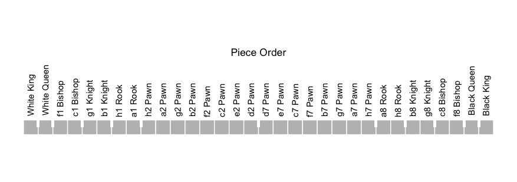
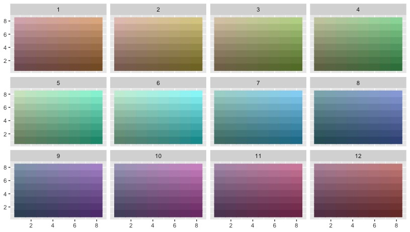

I recently finished a small generative art project on Deep Blue versus Garry Kasparov. The main goals were creating a new visualization of the chess games and playing around with colors. In the end, I think it turned out ok, but it still needs more work. (For example, it doesn’t handle pawn promotion well.)
The idea came out of watching The Queen’s Gambit last year. There’s a terrific scene where the main character says, “Chess isn’t always competitive … chess can also be beautiful.” I thought that was interesting because the series happened in 1950’s/1960’s before computers were winning chess. So today, the most competitive setup involves computers, but that still leaves room for the beautiful part from humans. There’s a neat comparison between chess and generative art. This project uses moves from Deep Blue for the generative aspect, connecting to when computers started taking over competitively. Also, I think using chess data for generative art is neat for a found materials project.
Each of the games has a grid layout. Horizontally, the pieces lay across the columns. Vertically, the games’ actions move down the grid, with pieces dropping out when captured. Horizontal lines connect the pieces when captured. The square’s color tells the location on the board. Rank follows luminance (white is lighter, black is darker) while files move along hue/chroma in the HCL color space. As pieces move on the board, their color changes from one row to the next.
The code uses the rchess package with game files from chessgames.com. data.table handles the data manipulation and image setup. The code can be found here.
Here is the piece order. This also shows the first row in each grid (notices the notches separating the types). The order starts in the middle of the king and queen, works outward, moves to the pawns, works inwards, then reverses to the other side. The two kings end up on the outside edges. The winning side’s king will drop down into the final row. If there is no winner, the kings end on the same row.

A different grid of colors exists for each board of the 14 games (seven for 1996 and seven for 1997). The colors sets are eight by eight grids that maximize the distance between points in the HCL color space as they move around the hue values.

The following graph shows all the colors with their hue/chroma values. I found moving chroma out as hue moves give some distinction between the sides of the board without creating too much of a striping effect. There are different luminance values for each grid to maximize the space they can take.

Finally, here are the two works. The background colors are from the middle of the grid then rotated around the space.


We can see how the number of turns affects the length of the grids, how some pieces (some pawns) get taken more often than others, and how there’s a lot of exchanges in pieces.